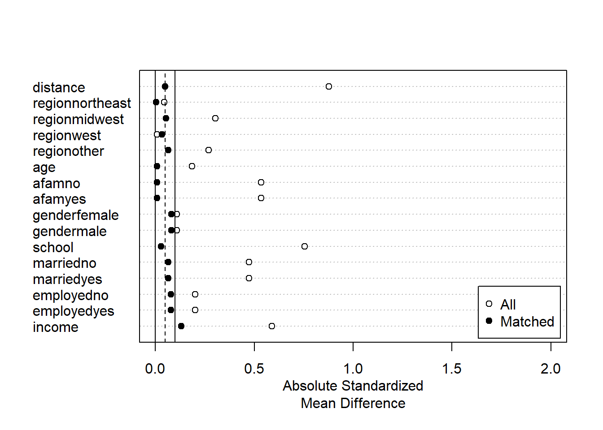

Chapter 6 部分線形モデルの推定
（条件付き）平均差の周辺化値の推定を目指します。
モデルに関心のあるパラメータを埋め込み、推定します。
\[E[Y|D=d,X=x]=\underbrace{\tau}_{Interest\ parameter}\times d+\underbrace{f(x)}_{Nuisance\ function}\]
- 点推定だけでなく、信頼区間も推定する。
6.1 データ
library(tidyverse)
data("NMES1988",
package = "AER")
raw <- na.omit(NMES1988)
set.seed(123)6.2 線形モデルの推定
\(\tau(x)=\tau,f(x)=\beta_0+\beta_1x_1+...+\beta_Lx_L\)と特定化
サンプル内MSEを最大化するように推定
robust standard errorを計算するためにestimatrパッケージ(Blair et al. 2021)を利用
library(estimatr)- lm_robust関数で推定
lm_robust(visits ~ insurance + region + age + afam + gender + school + income + employed + married,
data = raw)## Estimate Std. Error t value Pr(>|t|) CI Lower
## (Intercept) 4.32086605 1.30928537 3.3001713 9.739642e-04 1.75400683
## insuranceyes 0.96591490 0.24785140 3.8971533 9.877947e-05 0.48000123
## regionnortheast 0.34814737 0.30392728 1.1454957 2.520663e-01 -0.24770327
## regionmidwest -0.40583622 0.25526934 -1.5898354 1.119439e-01 -0.90629278
## regionwest 0.57163030 0.30418463 1.8792215 6.028038e-02 -0.02472489
## age 0.04293421 0.15977094 0.2687235 7.881551e-01 -0.27029737
## afamyes -0.39294341 0.34701206 -1.1323624 2.575439e-01 -1.07326195
## gendermale -0.46726544 0.22050124 -2.1191057 3.413748e-02 -0.89955902
## school 0.08475793 0.03108035 2.7270588 6.415540e-03 0.02382479
## income -0.04678801 0.03712934 -1.2601357 2.076873e-01 -0.11958023
## employedyes -0.34186375 0.42407955 -0.8061312 4.202108e-01 -1.17327342
## marriedyes -0.29559842 0.23244624 -1.2716851 2.035523e-01 -0.75131020
## CI Upper DF
## (Intercept) 6.88772528 4394
## insuranceyes 1.45182856 4394
## regionnortheast 0.94399802 4394
## regionmidwest 0.09462034 4394
## regionwest 1.16798549 4394
## age 0.35616578 4394
## afamyes 0.28737512 4394
## gendermale -0.03497187 4394
## school 0.14569108 4394
## income 0.02600421 4394
## employedyes 0.48954591 4394
## marriedyes 0.16011336 4394線形モデルによる推定は、いくつかの問題がある
回帰式の定式化に強く依存する
一般に平均効果ではなく、加重平均が推計される
サンプルサイズに比べて、少数のコントロール変数を導入できない
以下ではマッチング法、機械学手法を用いた頑強な推定を目指す
発展:推計結果表
tidy関数により推定結果data.frameに変化することで、kable関数(knitrパッケージ)による推計結果表の整形、geom_pointrange関数による可視化が可能
点推定値(estimate)、標準誤差(std.error)のみを残した推計結果表
library(knitr)
fit <-
lm_robust(visits ~ insurance + region + age + afam + gender + school,
data = raw)
fit <- tidy(fit)
fit <- select(fit, term, estimate, std.error)
kable(fit, digits = 2)| term | estimate | std.error |
|---|---|---|
| (Intercept) | 3.65 | 1.23 |
| insuranceyes | 0.90 | 0.25 |
| regionnortheast | 0.36 | 0.30 |
| regionmidwest | -0.40 | 0.25 |
| regionwest | 0.55 | 0.30 |
| age | 0.12 | 0.15 |
| afamyes | -0.35 | 0.34 |
| gendermale | -0.63 | 0.21 |
| school | 0.07 | 0.03 |
fit <- filter(fit,
term == "insuranceyes")
kable(fit, digits = 2)| term | estimate | std.error |
|---|---|---|
| insuranceyes | 0.9 | 0.25 |
発展:Dot-and-Whisker plotによる可視化
- Dot-and-Whisker図により点推定量と信頼区間を可視化
fit <-
lm_robust(visits ~ insurance + region + age + afam + gender + school,
data = raw)
fit <- tidy(fit)
fit <- filter(fit,
term != "(Intercept)")
ggplot(fit, aes(y = term,
x = estimate,
xmin = conf.low,
xmax = conf.high)) +
geom_pointrange() +
geom_vline(xintercept = 0)
fit <- filter(fit,
term == "insuranceyes")
ggplot(fit, aes(y = term,
x = estimate,
xmin = conf.low,
xmax = conf.high)) +
geom_pointrange() +
geom_vline(xintercept = 0)
6.3 マッチング法による修正
回帰を行う事前準備としてマッチング法を利用する
重回帰が持つ関数形への依存度を減らせる (Daniel E. Ho et al. 2007)
MathItパッケージ (Daniel E. Ho et al. 2011)を利用
library(MatchIt)- 多数のマッチング法が実装されている
6.3.1 Exact matching
\(X\)が完全に同じサンプル同士をマッチングする
原因変数の分布に偏りがある場合（本例ではコントロールグループが少ない）、少ないグループ内での平均効果(Average treatment effect for treat または control)の推定を目指すことでマッチできないサンプルを減らすことが期待できる。
fit.m <- matchit(insurance ~ region + age + afam + gender + school+ married + employed,
data = raw,
method = "exact",
estimand = "ATC"
)この例では、incomeもコントロール変数に加えた場合、Exact matching不可能（一つもマッチングできない）
マッチング結果の表示
summary(fit.m)##
## Call:
## matchit(formula = insurance ~ region + age + afam + gender +
## school + married + employed, data = raw, method = "exact",
## estimand = "ATC")
##
## Summary of Balance for All Data:
## Means Treated Means Control Std. Mean Diff. Var. Ratio
## regionnortheast 0.1938 0.1766 0.0450 .
## regionmidwest 0.2882 0.1736 0.3026 .
## regionwest 0.1818 0.1787 0.0082 .
## regionother 0.3362 0.4711 -0.2703 .
## age 7.3737 7.5021 -0.1849 0.7752
## afamno 0.9380 0.6914 0.5340 .
## afamyes 0.0620 0.3086 -0.5340 .
## genderfemale 0.5849 0.6365 -0.1073 .
## gendermale 0.4151 0.3635 0.1073 .
## school 10.9547 7.9827 0.7549 0.7464
## marriedno 0.4028 0.6315 -0.4740 .
## marriedyes 0.5972 0.3685 0.4740 .
## employedno 0.8857 0.9350 -0.2001 .
## employedyes 0.1143 0.0650 0.2001 .
## eCDF Mean eCDF Max
## regionnortheast 0.0172 0.0172
## regionmidwest 0.1146 0.1146
## regionwest 0.0031 0.0031
## regionother 0.1349 0.1349
## age 0.0357 0.0936
## afamno 0.2467 0.2467
## afamyes 0.2467 0.2467
## genderfemale 0.0516 0.0516
## gendermale 0.0516 0.0516
## school 0.1564 0.3248
## marriedno 0.2287 0.2287
## marriedyes 0.2287 0.2287
## employedno 0.0493 0.0493
## employedyes 0.0493 0.0493
##
##
## Summary of Balance for Matched Data:
## Means Treated Means Control Std. Mean Diff. Var. Ratio
## regionnortheast 0.2107 0.2107 -0 .
## regionmidwest 0.2201 0.2201 0 .
## regionwest 0.1384 0.1384 0 .
## regionother 0.4308 0.4308 0 .
## age 7.3296 7.3296 0 0.9998
## afamno 0.9434 0.9434 0 .
## afamyes 0.0566 0.0566 0 .
## genderfemale 0.6887 0.6887 0 .
## gendermale 0.3113 0.3113 0 .
## school 9.9277 9.9277 0 0.9998
## marriedno 0.5283 0.5283 0 .
## marriedyes 0.4717 0.4717 0 .
## employedno 0.9560 0.9560 -0 .
## employedyes 0.0440 0.0440 0 .
## eCDF Mean eCDF Max Std. Pair Dist.
## regionnortheast 0 0 0
## regionmidwest 0 0 0
## regionwest 0 0 0
## regionother 0 0 0
## age 0 0 0
## afamno 0 0 0
## afamyes 0 0 0
## genderfemale 0 0 0
## gendermale 0 0 0
## school 0 0 0
## marriedno 0 0 0
## marriedyes 0 0 0
## employedno 0 0 0
## employedyes 0 0 0
##
## Percent Balance Improvement:
## Std. Mean Diff. Var. Ratio eCDF Mean eCDF Max
## regionnortheast 100 . 100 100
## regionmidwest 100 . 100 100
## regionwest 100 . 100 100
## regionother 100 . 100 100
## age 100 99.9 100 100
## afamno 100 . 100 100
## afamyes 100 . 100 100
## genderfemale 100 . 100 100
## gendermale 100 . 100 100
## school 100 99.9 100 100
## marriedno 100 . 100 100
## marriedyes 100 . 100 100
## employedno 100 . 100 100
## employedyes 100 . 100 100
##
## Sample Sizes:
## Control Treated
## All 985 3421.
## Matched (ESS) 318 338.39
## Matched 318 624.
## Unmatched 667 2797.
## Discarded 0 0.Sample sizesにて、マッチングできなかったサンプル数（985のコントロールグループ中、667サンプルがマッチングできなかった）が確認できる
マッチング結果の図示
sum.m <- summary(fit.m)
plot(sum.m, xlim=c(0,2))- マッチング結果を変数として含んだデータを作成
df <- match.data(fit.m)“subclass”: マッチングしたグループ
“weights”：マッチング後の推計に用いるウェイト
マッチングしたデータを用いた推定
- 新たに作成されるweight (defaltではweights)を用いた、加重推定で実装
lm_robust(visits ~ insurance,
df,
weights = weights)## Estimate Std. Error t value Pr(>|t|) CI Lower CI Upper DF
## (Intercept) 4.707547 0.2978972 15.802589 4.605531e-50 4.1229266 5.292168 940
## insuranceyes 1.481104 0.4842812 3.058355 2.288589e-03 0.5307064 2.431501 9406.3.2 Coarsened exact matching
Coarsened exact matching(Iacus, King, and Porro 2012)の実装
- 連続変数をカテゴリー変数化することで、マッチングできるサンプルサイズを増やすことが期待できる
fit.m <- matchit(insurance ~ region + age + afam + gender + school+ married + employed + income,
data = raw,
method = "cem",
estimand = "ATC")- マッチング結果
sum.m <- summary(fit.m)
sum.m##
## Call:
## matchit(formula = insurance ~ region + age + afam + gender +
## school + married + employed + income, data = raw, method = "cem",
## estimand = "ATC")
##
## Summary of Balance for All Data:
## Means Treated Means Control Std. Mean Diff. Var. Ratio
## regionnortheast 0.1938 0.1766 0.0450 .
## regionmidwest 0.2882 0.1736 0.3026 .
## regionwest 0.1818 0.1787 0.0082 .
## regionother 0.3362 0.4711 -0.2703 .
## age 7.3737 7.5021 -0.1849 0.7752
## afamno 0.9380 0.6914 0.5340 .
## afamyes 0.0620 0.3086 -0.5340 .
## genderfemale 0.5849 0.6365 -0.1073 .
## gendermale 0.4151 0.3635 0.1073 .
## school 10.9547 7.9827 0.7549 0.7464
## marriedno 0.4028 0.6315 -0.4740 .
## marriedyes 0.5972 0.3685 0.4740 .
## employedno 0.8857 0.9350 -0.2001 .
## employedyes 0.1143 0.0650 0.2001 .
## income 2.7759 1.6630 0.5889 2.7193
## eCDF Mean eCDF Max
## regionnortheast 0.0172 0.0172
## regionmidwest 0.1146 0.1146
## regionwest 0.0031 0.0031
## regionother 0.1349 0.1349
## age 0.0357 0.0936
## afamno 0.2467 0.2467
## afamyes 0.2467 0.2467
## genderfemale 0.0516 0.0516
## gendermale 0.0516 0.0516
## school 0.1564 0.3248
## marriedno 0.2287 0.2287
## marriedyes 0.2287 0.2287
## employedno 0.0493 0.0493
## employedyes 0.0493 0.0493
## income 0.1920 0.3244
##
##
## Summary of Balance for Matched Data:
## Means Treated Means Control Std. Mean Diff. Var. Ratio
## regionnortheast 0.1663 0.1663 0.0000 .
## regionmidwest 0.2026 0.2026 0.0000 .
## regionwest 0.1471 0.1471 0.0000 .
## regionother 0.4840 0.4840 0.0000 .
## age 7.3175 7.3117 0.0084 0.9786
## afamno 0.8486 0.8486 0.0000 .
## afamyes 0.1514 0.1514 -0.0000 .
## genderfemale 0.6652 0.6652 0.0000 .
## gendermale 0.3348 0.3348 0.0000 .
## school 9.2821 9.2601 0.0056 0.9798
## marriedno 0.5458 0.5458 0.0000 .
## marriedyes 0.4542 0.4542 0.0000 .
## employedno 0.9659 0.9659 -0.0000 .
## employedyes 0.0341 0.0341 0.0000 .
## income 1.6947 1.4311 0.1395 0.9181
## eCDF Mean eCDF Max Std. Pair Dist.
## regionnortheast 0.0000 0.0000 0.0000
## regionmidwest 0.0000 0.0000 0.0000
## regionwest 0.0000 0.0000 0.0000
## regionother 0.0000 0.0000 0.0000
## age 0.0040 0.0237 0.1533
## afamno 0.0000 0.0000 0.0000
## afamyes 0.0000 0.0000 0.0000
## genderfemale 0.0000 0.0000 0.0000
## gendermale 0.0000 0.0000 0.0000
## school 0.0018 0.0158 0.0211
## marriedno 0.0000 0.0000 0.0000
## marriedyes 0.0000 0.0000 0.0000
## employedno 0.0000 0.0000 0.0000
## employedyes 0.0000 0.0000 0.0000
## income 0.0845 0.1898 0.3971
##
## Percent Balance Improvement:
## Std. Mean Diff. Var. Ratio eCDF Mean eCDF Max
## regionnortheast 100.0 . 100.0 100.0
## regionmidwest 100.0 . 100.0 100.0
## regionwest 100.0 . 100.0 100.0
## regionother 100.0 . 100.0 100.0
## age 95.5 91.5 88.8 74.7
## afamno 100.0 . 100.0 100.0
## afamyes 100.0 . 100.0 100.0
## genderfemale 100.0 . 100.0 100.0
## gendermale 100.0 . 100.0 100.0
## school 99.3 93.0 98.8 95.1
## marriedno 100.0 . 100.0 100.0
## marriedyes 100.0 . 100.0 100.0
## employedno 100.0 . 100.0 100.0
## employedyes 100.0 . 100.0 100.0
## income 76.3 91.5 56.0 41.5
##
## Sample Sizes:
## Control Treated
## All 985 3421.
## Matched (ESS) 469 438.65
## Matched 469 1196.
## Unmatched 516 2225.
## Discarded 0 0.- 可視化
plot(sum.m, xlim=c(0,2))
Exact matching以外のマッチング法では、マッチングされたサンプル内でも\(X\)の違いが残る
- マッチングされたサンプル内で回帰分析を行うことで、再調整する
df <- match.data(fit.m)
lm_robust(visits ~ insurance + region + age + afam + gender + school+ married + employed + income,
df,
weights = weights)## Estimate Std. Error t value Pr(>|t|) CI Lower
## (Intercept) 0.07031894 3.1830746 0.02209152 9.823776e-01 -6.17296408
## insuranceyes 1.63803136 0.4111893 3.98364310 7.081498e-05 0.83152463
## regionnortheast 0.37332676 0.6686084 0.55836385 5.766716e-01 -0.93808186
## regionmidwest -1.01255860 0.4957411 -2.04251498 4.125884e-02 -1.98490525
## regionwest 1.46720871 0.9811751 1.49535874 1.350117e-01 -0.45726821
## age 0.54604701 0.4139224 1.31920151 1.872845e-01 -0.26582038
## afamyes -1.09566719 0.8327555 -1.31571289 1.884529e-01 -2.72903401
## gendermale -0.77640463 0.5006594 -1.55076411 1.211496e-01 -1.75839805
## school 0.16064654 0.1041628 1.54226418 1.232008e-01 -0.04365837
## marriedyes -0.16566757 0.5419170 -0.30570652 7.598666e-01 -1.22858372
## employedyes -1.47819362 1.1718433 -1.26142599 2.073334e-01 -3.77664729
## income -0.36310301 0.1778814 -2.04126501 4.138301e-02 -0.71199956
## CI Upper DF
## (Intercept) 6.31360197 1653
## insuranceyes 2.44453809 1653
## regionnortheast 1.68473538 1653
## regionmidwest -0.04021195 1653
## regionwest 3.39168562 1653
## age 1.35791440 1653
## afamyes 0.53769963 1653
## gendermale 0.20558879 1653
## school 0.36495144 1653
## marriedyes 0.89724858 1653
## employedyes 0.82026004 1653
## income -0.01420647 16536.3.3 Propensity score with subclassification
Coarsened exact matchingでもマッチングできないサンプルが多数出てくる可能性
- とくに\(X\)が大量にある場合
1次元の距離指標を用いて、マッチングを行う
- 距離指標としては、Mahalanobis’ Distance、Propensity scoreなど
ここではPropensity score \(p_d(X)\)を用いる
\[p_d(X)\equiv \Pr[D=d|X]\]
属性\(X\)のユニットの中で、原因変数の値が\(d\)である人の割合
未知の場合、データから推定する必要がある
推定された傾向スコアを用いたStratification マッチング
- ロジットにて傾向スコアを推定
fit.m <- matchit(insurance ~ region + age + afam + gender + school+ married + employed + income,
data = raw,
method = "subclass",
estimand = "ATC"
)- マッチング結果
sum.m <- summary(fit.m)
sum.m##
## Call:
## matchit(formula = insurance ~ region + age + afam + gender +
## school + married + employed + income, data = raw, method = "subclass",
## estimand = "ATC")
##
## Summary of Balance for All Data:
## Means Treated Means Control Std. Mean Diff. Var. Ratio
## distance 0.8230 0.6148 0.8783 0.3568
## regionnortheast 0.1938 0.1766 0.0450 .
## regionmidwest 0.2882 0.1736 0.3026 .
## regionwest 0.1818 0.1787 0.0082 .
## regionother 0.3362 0.4711 -0.2703 .
## age 7.3737 7.5021 -0.1849 0.7752
## afamno 0.9380 0.6914 0.5340 .
## afamyes 0.0620 0.3086 -0.5340 .
## genderfemale 0.5849 0.6365 -0.1073 .
## gendermale 0.4151 0.3635 0.1073 .
## school 10.9547 7.9827 0.7549 0.7464
## marriedno 0.4028 0.6315 -0.4740 .
## marriedyes 0.5972 0.3685 0.4740 .
## employedno 0.8857 0.9350 -0.2001 .
## employedyes 0.1143 0.0650 0.2001 .
## income 2.7759 1.6630 0.5889 2.7193
## eCDF Mean eCDF Max
## distance 0.2750 0.4285
## regionnortheast 0.0172 0.0172
## regionmidwest 0.1146 0.1146
## regionwest 0.0031 0.0031
## regionother 0.1349 0.1349
## age 0.0357 0.0936
## afamno 0.2467 0.2467
## afamyes 0.2467 0.2467
## genderfemale 0.0516 0.0516
## gendermale 0.0516 0.0516
## school 0.1564 0.3248
## marriedno 0.2287 0.2287
## marriedyes 0.2287 0.2287
## employedno 0.0493 0.0493
## employedyes 0.0493 0.0493
## income 0.1920 0.3244
##
## Summary of Balance Across Subclasses
## Means Treated Means Control Std. Mean Diff. Var. Ratio
## distance 0.6264 0.6148 0.0486 0.9752
## regionnortheast 0.1752 0.1766 -0.0039 .
## regionmidwest 0.1941 0.1736 0.0542 .
## regionwest 0.1915 0.1787 0.0335 .
## regionother 0.4392 0.4711 -0.0638 .
## age 7.4961 7.5021 -0.0087 0.8894
## afamno 0.6956 0.6914 0.0092 .
## afamyes 0.3044 0.3086 -0.0092 .
## genderfemale 0.5977 0.6365 -0.0807 .
## gendermale 0.4023 0.3635 0.0807 .
## school 8.0956 7.9827 0.0287 1.0967
## marriedno 0.6000 0.6315 -0.0653 .
## marriedyes 0.4000 0.3685 0.0653 .
## employedno 0.9157 0.9350 -0.0782 .
## employedyes 0.0843 0.0650 0.0782 .
## income 1.9086 1.6630 0.1300 1.3758
## eCDF Mean eCDF Max
## distance 0.0133 0.0457
## regionnortheast 0.0015 0.0015
## regionmidwest 0.0205 0.0205
## regionwest 0.0128 0.0128
## regionother 0.0319 0.0319
## age 0.0133 0.0339
## afamno 0.0042 0.0042
## afamyes 0.0042 0.0042
## genderfemale 0.0388 0.0388
## gendermale 0.0388 0.0388
## school 0.0109 0.0311
## marriedno 0.0315 0.0315
## marriedyes 0.0315 0.0315
## employedno 0.0193 0.0193
## employedyes 0.0193 0.0193
## income 0.0622 0.1485
##
## Percent Balance Improvement:
## Std. Mean Diff. Var. Ratio eCDF Mean eCDF Max
## distance 94.5 -173.3 95.2 89.3
## regionnortheast 91.3 . 91.3 91.3
## regionmidwest 82.1 . 82.1 82.1
## regionwest -309.1 . -309.1 -309.1
## regionother 76.4 . 76.4 76.4
## age 95.3 -14.7 62.7 63.8
## afamno 98.3 . 98.3 98.3
## afamyes 98.3 . 98.3 98.3
## genderfemale 24.8 . 24.8 24.8
## gendermale 24.8 . 24.8 24.8
## school 96.2 -46.9 93.1 90.4
## marriedno 86.2 . 86.2 86.2
## marriedyes 86.2 . 86.2 86.2
## employedno 60.9 . 60.9 60.9
## employedyes 60.9 . 60.9 60.9
## income 77.9 49.4 67.6 54.2
##
## Sample Sizes:
## Control Treated
## All 985 3421.
## Matched (ESS) 985 999.44
## Matched 985 3421.
## Unmatched 0 0.
## Discarded 0 0.- マッチング結果の図示
plot(sum.m, xlim=c(0,2))
- マッチングしたデータを用いた推定
df <- match.data(fit.m) # マッチング結果を含んだ
lm_robust(visits ~ insurance + region + age + afam + gender + school+ married + employed,
df,
weights = weights)## Estimate Std. Error t value Pr(>|t|) CI Lower
## (Intercept) 2.69483196 1.56827266 1.7183440 0.085804312 -0.37977270
## insuranceyes 0.86429413 0.30326930 2.8499229 0.004393338 0.26973348
## regionnortheast 0.32880379 0.47161144 0.6971921 0.485719430 -0.59579228
## regionmidwest -0.72444843 0.38788012 -1.8677122 0.061868702 -1.48488891
## regionwest 0.36858393 0.43102618 0.8551312 0.392525130 -0.47644456
## age 0.32472400 0.19637511 1.6535904 0.098282174 -0.06027016
## afamyes -0.73188348 0.46736086 -1.5659923 0.117422424 -1.64814626
## gendermale -1.02017368 0.34142463 -2.9879909 0.002823707 -1.68953801
## school 0.05542150 0.04126024 1.3432182 0.179270695 -0.02546936
## marriedyes -0.07195191 0.30991060 -0.2321699 0.816416863 -0.67953285
## employedyes -0.54902900 0.45865317 -1.1970461 0.231353145 -1.44822033
## CI Upper DF
## (Intercept) 5.76943662 4395
## insuranceyes 1.45885478 4395
## regionnortheast 1.25339987 4395
## regionmidwest 0.03599205 4395
## regionwest 1.21361243 4395
## age 0.70971816 4395
## afamyes 0.18437930 4395
## gendermale -0.35080936 4395
## school 0.13631236 4395
## marriedyes 0.53562902 4395
## employedyes 0.35016234 43956.3.4 Nearest neighbor matching
傾向スコアを用いた最近旁マッチング
傾向スコアがもっとも似ているサンプルとマッチングする
デフォルトでは、Replacement無しのマッチングを行う
fit.m <- matchit(insurance ~ region + age + afam + gender + school+ married + employed + income,
data = raw,
method = "nearest",
estimand = "ATC"
)- マッチング結果
sum.m <- summary(fit.m)
sum.m##
## Call:
## matchit(formula = insurance ~ region + age + afam + gender +
## school + married + employed + income, data = raw, method = "nearest",
## estimand = "ATC")
##
## Summary of Balance for All Data:
## Means Treated Means Control Std. Mean Diff. Var. Ratio
## distance 0.8230 0.6148 0.8783 0.3568
## regionnortheast 0.1938 0.1766 0.0450 .
## regionmidwest 0.2882 0.1736 0.3026 .
## regionwest 0.1818 0.1787 0.0082 .
## regionother 0.3362 0.4711 -0.2703 .
## age 7.3737 7.5021 -0.1849 0.7752
## afamno 0.9380 0.6914 0.5340 .
## afamyes 0.0620 0.3086 -0.5340 .
## genderfemale 0.5849 0.6365 -0.1073 .
## gendermale 0.4151 0.3635 0.1073 .
## school 10.9547 7.9827 0.7549 0.7464
## marriedno 0.4028 0.6315 -0.4740 .
## marriedyes 0.5972 0.3685 0.4740 .
## employedno 0.8857 0.9350 -0.2001 .
## employedyes 0.1143 0.0650 0.2001 .
## income 2.7759 1.6630 0.5889 2.7193
## eCDF Mean eCDF Max
## distance 0.2750 0.4285
## regionnortheast 0.0172 0.0172
## regionmidwest 0.1146 0.1146
## regionwest 0.0031 0.0031
## regionother 0.1349 0.1349
## age 0.0357 0.0936
## afamno 0.2467 0.2467
## afamyes 0.2467 0.2467
## genderfemale 0.0516 0.0516
## gendermale 0.0516 0.0516
## school 0.1564 0.3248
## marriedno 0.2287 0.2287
## marriedyes 0.2287 0.2287
## employedno 0.0493 0.0493
## employedyes 0.0493 0.0493
## income 0.1920 0.3244
##
##
## Summary of Balance for Matched Data:
## Means Treated Means Control Std. Mean Diff. Var. Ratio
## distance 0.6835 0.6148 0.2897 0.5687
## regionnortheast 0.1939 0.1766 0.0453 .
## regionmidwest 0.1878 0.1736 0.0375 .
## regionwest 0.1949 0.1787 0.0424 .
## regionother 0.4234 0.4711 -0.0956 .
## age 7.4870 7.5021 -0.0218 0.8702
## afamno 0.8010 0.6914 0.2374 .
## afamyes 0.1990 0.3086 -0.2374 .
## genderfemale 0.6173 0.6365 -0.0401 .
## gendermale 0.3827 0.3635 0.0401 .
## school 8.5736 7.9827 0.1501 0.8404
## marriedno 0.5909 0.6315 -0.0842 .
## marriedyes 0.4091 0.3685 0.0842 .
## employedno 0.9228 0.9350 -0.0494 .
## employedyes 0.0772 0.0650 0.0494 .
## income 1.7858 1.6630 0.0650 0.7674
## eCDF Mean eCDF Max Std. Pair Dist.
## distance 0.0309 0.1827 0.2898
## regionnortheast 0.0173 0.0173 0.7800
## regionmidwest 0.0142 0.0142 0.7130
## regionwest 0.0162 0.0162 0.7897
## regionother 0.0477 0.0477 0.9173
## age 0.0133 0.0365 1.0470
## afamno 0.1096 0.1096 0.4879
## afamyes 0.1096 0.1096 0.4879
## genderfemale 0.0193 0.0193 0.9224
## gendermale 0.0193 0.0193 0.9224
## school 0.0318 0.0924 0.7555
## marriedno 0.0406 0.0406 0.8292
## marriedyes 0.0406 0.0406 0.8292
## employedno 0.0122 0.0122 0.5437
## employedyes 0.0122 0.0122 0.5437
## income 0.0615 0.1472 0.7354
##
## Percent Balance Improvement:
## Std. Mean Diff. Var. Ratio eCDF Mean eCDF Max
## distance 67.0 45.2 88.7 57.4
## regionnortheast -0.6 . -0.6 -0.6
## regionmidwest 87.6 . 87.6 87.6
## regionwest -417.6 . -417.6 -417.6
## regionother 64.6 . 64.6 64.6
## age 88.2 45.4 62.7 60.9
## afamno 55.5 . 55.5 55.5
## afamyes 55.5 . 55.5 55.5
## genderfemale 62.6 . 62.6 62.6
## gendermale 62.6 . 62.6 62.6
## school 80.1 40.6 79.6 71.6
## marriedno 82.2 . 82.2 82.2
## marriedyes 82.2 . 82.2 82.2
## employedno 75.3 . 75.3 75.3
## employedyes 75.3 . 75.3 75.3
## income 89.0 73.5 67.9 54.6
##
## Sample Sizes:
## Control Treated
## All 985 3421
## Matched 985 985
## Unmatched 0 2436
## Discarded 0 0- マッチング結果の図示
plot(sum.m, xlim=c(0,2))
マッチングしたデータを用いた推定
- replacement無しの場合ｍマッチングしたペア(subclass)でクラスタリングしたrobust standard errorの利用を推奨 (Abadie and Spiess 2021)
df <- match.data(fit.m) # マッチング結果を含んだ
lm_robust(visits ~ insurance + region + age + afam + gender + school+ married + employed + income,
df,
clusters = subclass,
weights = weights)## Estimate Std. Error t value Pr(>|t|) CI Lower
## (Intercept) 4.28376769 1.80365512 2.3750481 0.0179117218 0.74034506
## insuranceyes 0.88089215 0.27930681 3.1538513 0.0016606844 0.33277940
## regionnortheast 0.11745650 0.43169716 0.2720808 0.7856724490 -0.73071167
## regionmidwest -1.09402106 0.34563753 -3.1652265 0.0016483956 -1.77317575
## regionwest 0.67689981 0.41977554 1.6125280 0.1074679565 -0.14780947
## age 0.15738399 0.21874416 0.7194889 0.4721765473 -0.27238904
## afamyes -0.65822959 0.31824549 -2.0683077 0.0391049262 -1.28343451
## gendermale -1.12983896 0.30900225 -3.6564101 0.0002772051 -1.73664207
## school 0.04179621 0.03992562 1.0468521 0.2957240492 -0.03666544
## marriedyes 0.26953526 0.28939461 0.9313762 0.3520209096 -0.29877535
## employedyes -0.28682948 0.69900943 -0.4103371 0.6821000780 -1.66715900
## income -0.18287346 0.07454076 -2.4533350 0.0158456243 -0.33072080
## CI Upper DF
## (Intercept) 7.82719031 515.2437
## insuranceyes 1.42900489 973.5096
## regionnortheast 0.96562467 498.9836
## regionmidwest -0.41486638 478.5757
## regionwest 1.50160909 508.1414
## age 0.58715703 499.0168
## afamyes -0.03302466 519.9827
## gendermale -0.52303586 627.8155
## school 0.12025787 454.6173
## marriedyes 0.83784587 621.0176
## employedyes 1.09350005 162.2410
## income -0.03502611 102.22466.3.5 Entropy
library(WeightIt)
W.out <- weightit(insurance ~ region + age + afam + gender + school+ married + employed + income,
data = raw,
estimand = "ATC",
method = "ebal")
summary(W.out)## Summary of weights
##
## - Weight ranges:
##
## Min Max
## no 1.0000 || 1.0000
## yes 0.0001 |---------------------------| 28.9892
##
## - Units with 5 greatest weights by group:
##
## 16 14 13 6 3
## no 1 1 1 1 1
## 1177 677 4341 1813 2694
## yes 18.4264 18.4661 19.7307 21.8433 28.9892
##
## - Weight statistics:
##
## Coef of Var MAD Entropy # Zeros
## no 0.000 0.000 0.000 0
## yes 1.693 0.812 0.642 0
##
## - Effective Sample Sizes:
##
## no yes
## Unweighted 985 3421.
## Weighted 985 884.65library(cobalt)
bal.tab(W.out, m.threshold = .05, disp.v.ratio = TRUE)## Call
## weightit(formula = insurance ~ region + age + afam + gender +
## school + married + employed + income, data = raw, method = "ebal",
## estimand = "ATC")
##
## Balance Measures
## Type Diff.Adj M.Threshold V.Ratio.Adj
## region_northeast Binary -0.0000 Balanced, <0.05 .
## region_midwest Binary 0.0000 Balanced, <0.05 .
## region_west Binary 0.0000 Balanced, <0.05 .
## region_other Binary -0.0000 Balanced, <0.05 .
## age Contin. -0.0000 Balanced, <0.05 0.8667
## afam_yes Binary -0.0000 Balanced, <0.05 .
## gender_male Binary 0.0000 Balanced, <0.05 .
## school Contin. 0.0000 Balanced, <0.05 1.0289
## married_yes Binary 0.0000 Balanced, <0.05 .
## employed_yes Binary 0.0000 Balanced, <0.05 .
## income Contin. -0.0001 Balanced, <0.05 0.6459
##
## Balance tally for mean differences
## count
## Balanced, <0.05 11
## Not Balanced, >0.05 0
##
## Variable with the greatest mean difference
## Variable Diff.Adj M.Threshold
## income -0.0001 Balanced, <0.05
##
## Effective sample sizes
## no yes
## Unadjusted 985 3421.
## Adjusted 985 884.65lm_robust(visits ~ insurance + age + region + afam + gender + school+ married + employed + income,
raw,
weights = W.out$weights)## Estimate Std. Error t value Pr(>|t|) CI Lower
## (Intercept) 2.36274184 1.57193540 1.5030782 0.132890743 -0.719043838
## insuranceyes 0.87286457 0.32413006 2.6929454 0.007109266 0.237406281
## age 0.39960249 0.20162280 1.9819311 0.047549163 0.004320187
## regionnortheast 0.20128857 0.55373946 0.3635077 0.716243138 -0.884319874
## regionmidwest -0.82390544 0.41928838 -1.9650090 0.049476104 -1.645921984
## regionwest 0.31924580 0.46583607 0.6853179 0.493179490 -0.594027689
## afamyes -0.64070184 0.54030964 -1.1858050 0.235763455 -1.699981057
## gendermale -1.18077009 0.39377035 -2.9986262 0.002727193 -1.952758446
## school 0.05733969 0.05107321 1.1226961 0.261627939 -0.042789542
## marriedyes -0.09064400 0.30635241 -0.2958815 0.767334599 -0.691249126
## employedyes -0.37631351 0.48631742 -0.7738022 0.439089378 -1.329740761
## income -0.10250796 0.08115818 -1.2630639 0.206633250 -0.261618890
## CI Upper DF
## (Intercept) 5.444527514 4394
## insuranceyes 1.508322853 4394
## age 0.794884789 4394
## regionnortheast 1.286897008 4394
## regionmidwest -0.001888886 4394
## regionwest 1.232519283 4394
## afamyes 0.418577372 4394
## gendermale -0.408781728 4394
## school 0.157468929 4394
## marriedyes 0.509961135 4394
## employedyes 0.577113747 4394
## income 0.056602972 43946.4 部分推計モデルの推定
- 部分線形モデルをロビンソン変換(Robinson 1988)
\[Y_i-\underbrace{E[Y_i|X_i]}_{Nuisance\ term}=\tau\times [D_i-\underbrace{E[D_i|X_i]}_{Nuisance\ term}]+u_i\]
\(E[Y_i|X_i],E[D_i|X_i]\)を予測関数として推定し、予測誤差間を単回帰すればよい
実際には\(E[Y_i|X_i],E[D_i|X_i]\)は未知の関数なので何らかの方法で推定する必要がある。関数の推定なので予測の手法が適用できる。
6.4.0.1 Double selection: rlassoEffect (hdm)
2重選択法(Belloni, Chernozhukov, and Hansen 2014)を紹介
LASSOにより\(Y_i,D_i\)の両方あるいはどちらか一方を予測する上でrelevantな\(X^c\)を特定しコントロールする
- \(Y_i,D_i\)どちらの予測にもrelevantではない変数は除外する
hdmパッケージ(Spindler, Chernozhukov, and Hansen 2019)を利用
library(hdm)
Y <- raw$visits
D <- if_else(raw$insurance == "yes",1,0)
X <- model.matrix(~ - 1+ region + age + afam + gender + school +
I(age^2) + I(school^2) +
region:age + region:afam + region:gender + region:school +
age:afam + age:gender + age:school +
afam:gender + afam:school +
gender:school,
raw)
fit <-
rlassoEffect(x = X,
y = Y,
d = D,
method = "double selection")- 推定結果
summary(fit)## [1] "Estimates and significance testing of the effect of target variables"
## Estimate. Std. Error t value Pr(>|t|)
## d1 0.8642 0.2452 3.524 0.000425 ***
## ---
## Signif. codes: 0 '***' 0.001 '**' 0.01 '*' 0.05 '.' 0.1 ' ' 1- 選択されたコントロール変数
fit$selection.index## regionnortheast regionmidwest
## FALSE TRUE
## regionwest regionother
## FALSE FALSE
## age afamyes
## FALSE FALSE
## gendermale school
## FALSE TRUE
## I(age^2) I(school^2)
## FALSE FALSE
## regionnortheast:age regionmidwest:age
## FALSE FALSE
## regionwest:age regionnortheast:afamyes
## FALSE FALSE
## regionmidwest:afamyes regionwest:afamyes
## FALSE FALSE
## regionnortheast:gendermale regionmidwest:gendermale
## FALSE FALSE
## regionwest:gendermale regionnortheast:school
## FALSE FALSE
## regionmidwest:school regionwest:school
## FALSE FALSE
## age:afamyes age:gendermale
## TRUE FALSE
## age:school afamyes:gendermale
## TRUE FALSE
## afamyes:school gendermale:school
## FALSE FALSE6.4.0.2 Double Machine Learning (DoubleML)
Double Machine Learning法(Chernozhukov et al. 2018)を紹介
なんらかの方法（例、OLS、ランダムフォレスト、LASSO）で\(E[Y|X],E[D|X]\)の予測関数\(f_Y(X),f_D(X)\)を推定し、予測誤差を単回帰
DoubleMLパッケージ(Bach et al. 2021)を利用
library(DoubleML)
library(mlr3)
library(mlr3learners)
library(data.table)
X <- model.matrix(~ - 1+ region + age + afam + gender + school,
raw)
learner <-
lrn("regr.ranger",
num.trees = 100) # Require bigger num.trees in practice
ml_g <- learner$clone()
ml_m <- learner$clone()
obj_dml_data <-
double_ml_data_from_matrix(X = X,
y = as.numeric(Y),
d = as.numeric(D))
dml_plr_obj <-
DoubleMLPLR$new(obj_dml_data,
ml_g,
ml_m,
dml_procedure="dml1",
n_rep = 3)
dml_plr_obj$fit()## INFO [12:46:17.238] [mlr3] Applying learner 'regr.ranger' on task 'nuis_g' (iter 3/5)
## INFO [12:46:17.480] [mlr3] Applying learner 'regr.ranger' on task 'nuis_g' (iter 1/5)
## INFO [12:46:17.651] [mlr3] Applying learner 'regr.ranger' on task 'nuis_g' (iter 4/5)
## INFO [12:46:17.801] [mlr3] Applying learner 'regr.ranger' on task 'nuis_g' (iter 5/5)
## INFO [12:46:17.983] [mlr3] Applying learner 'regr.ranger' on task 'nuis_g' (iter 2/5)
## INFO [12:46:18.426] [mlr3] Applying learner 'regr.ranger' on task 'nuis_m' (iter 1/5)
## INFO [12:46:18.612] [mlr3] Applying learner 'regr.ranger' on task 'nuis_m' (iter 3/5)
## INFO [12:46:18.782] [mlr3] Applying learner 'regr.ranger' on task 'nuis_m' (iter 4/5)
## INFO [12:46:18.968] [mlr3] Applying learner 'regr.ranger' on task 'nuis_m' (iter 5/5)
## INFO [12:46:19.138] [mlr3] Applying learner 'regr.ranger' on task 'nuis_m' (iter 2/5)
## INFO [12:46:19.446] [mlr3] Applying learner 'regr.ranger' on task 'nuis_g' (iter 3/5)
## INFO [12:46:19.611] [mlr3] Applying learner 'regr.ranger' on task 'nuis_g' (iter 5/5)
## INFO [12:46:19.825] [mlr3] Applying learner 'regr.ranger' on task 'nuis_g' (iter 1/5)
## INFO [12:46:20.003] [mlr3] Applying learner 'regr.ranger' on task 'nuis_g' (iter 2/5)
## INFO [12:46:20.192] [mlr3] Applying learner 'regr.ranger' on task 'nuis_g' (iter 4/5)
## INFO [12:46:20.439] [mlr3] Applying learner 'regr.ranger' on task 'nuis_m' (iter 4/5)
## INFO [12:46:20.597] [mlr3] Applying learner 'regr.ranger' on task 'nuis_m' (iter 1/5)
## INFO [12:46:20.740] [mlr3] Applying learner 'regr.ranger' on task 'nuis_m' (iter 5/5)
## INFO [12:46:20.904] [mlr3] Applying learner 'regr.ranger' on task 'nuis_m' (iter 3/5)
## INFO [12:46:21.074] [mlr3] Applying learner 'regr.ranger' on task 'nuis_m' (iter 2/5)
## INFO [12:46:21.352] [mlr3] Applying learner 'regr.ranger' on task 'nuis_g' (iter 1/5)
## INFO [12:46:21.571] [mlr3] Applying learner 'regr.ranger' on task 'nuis_g' (iter 3/5)
## INFO [12:46:21.756] [mlr3] Applying learner 'regr.ranger' on task 'nuis_g' (iter 5/5)
## INFO [12:46:21.898] [mlr3] Applying learner 'regr.ranger' on task 'nuis_g' (iter 2/5)
## INFO [12:46:22.079] [mlr3] Applying learner 'regr.ranger' on task 'nuis_g' (iter 4/5)
## INFO [12:46:22.324] [mlr3] Applying learner 'regr.ranger' on task 'nuis_m' (iter 3/5)
## INFO [12:46:22.529] [mlr3] Applying learner 'regr.ranger' on task 'nuis_m' (iter 1/5)
## INFO [12:46:22.715] [mlr3] Applying learner 'regr.ranger' on task 'nuis_m' (iter 2/5)
## INFO [12:46:22.897] [mlr3] Applying learner 'regr.ranger' on task 'nuis_m' (iter 4/5)
## INFO [12:46:23.070] [mlr3] Applying learner 'regr.ranger' on task 'nuis_m' (iter 5/5)print(dml_plr_obj)## ================= DoubleMLPLR Object ==================
##
##
## ------------------ Data summary ------------------
## Outcome variable: y
## Treatment variable(s): d
## Covariates: X1, X2, X3, X4, X5, X6, X7, X8
## Instrument(s):
## No. Observations: 4406
##
## ------------------ Score & algorithm ------------------
## Score function: partialling out
## DML algorithm: dml1
##
## ------------------ Machine learner ------------------
## ml_g: regr.ranger
## ml_m: regr.ranger
##
## ------------------ Resampling ------------------
## No. folds: 5
## No. repeated sample splits: 3
## Apply cross-fitting: TRUE
##
## ------------------ Fit summary ------------------
## [1] "Estimates and significance testing of the effect of target variables"
## Estimate. Std. Error t value Pr(>|t|)
## d 1.0325 0.2447 4.22 2.45e-05 ***
## ---
## Signif. codes: 0 '***' 0.001 '**' 0.01 '*' 0.05 '.' 0.1 ' ' 1